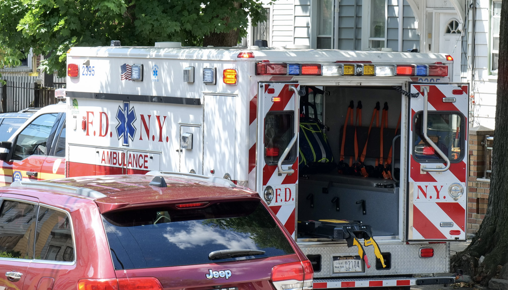

New Medicaid Work Rules Could Cut Off Health Care for East New York Residents
A new federal law will soon require many low-income adults on Medicaid to prove they’re working or in approved activities to keep their coverage. Here’s what East New York residents need to know before 2027.
Latest Stories
All Stories →New Medicaid Work Rules Could Cut Off Health Care for East New York Residents
A new federal law will soon require many low-income adults on Medicaid to prove they’re working or in approved activities to keep their coverage. Here’s what East New York residents need to know before 2027.

Who Supports the People Who Support East New York?
Community support workers face burnout while holding East New York together from the inside.

East New York Families May Be Left Behind in First Wave of 2-K
District 19’s absence from the city’s rollout leaves local families uncertain about early childhood care.
From the Archive
Substack ↗Community Events
All Events →Independent Journalism for East New York
The East New York Times is a community-first publication dedicated to covering the people, decisions, and events that shape life in East New York, Brooklyn. We answer to our community — not corporations, not advertisers, not political parties.
Our Mission